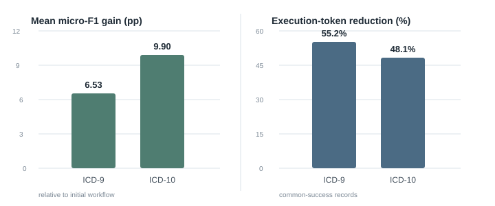

Can an Agent Improve the Workflow That Runs It?智能体能否改进运行自己的工作流？
RSI-ICD evolves prompts, executable structure, and revision experience from paired execution feedback—while keeping model weights fixed.RSI-ICD 在固定模型权重的条件下，根据配对执行反馈共同进化提示词、可执行结构和修订经验。
I built an execution-grounded evolution loop for clinical coding agents. A teacher edits prompts and executable routing; a frozen executor runs the revision; a verifier converts paired traces and outcomes into reusable experience. On MIMIC-IV ICD-9 / ICD-10, the evolved workflow improves the mean diagnosis/procedure micro-F1 by 6.53 / 9.90 percentage points over the initial workflow, while using 55.2% / 48.1% fewer execution tokens on common-success records.
我构建了一套执行反馈驱动的临床编码 Agent 自进化流程：教师智能体修改提示词和可执行路由，冻结后的执行器运行版本，验证器根据配对轨迹和结果沉淀可复用经验。在 MIMIC-IV ICD-9／ICD-10 上，进化后的工作流相对初始工作流，诊断／操作 Micro-F1 均值提升 6.53／9.90 个百分点，共同成功病例的执行 token 减少 55.2%／48.1%。
1Why evolve the workflow?为什么要进化工作流？
A clinical coding agent is a chain of decisions: extract findings, plan terminology queries, retrieve candidates, select codes, and validate the result. A prompt change can improve one link while breaking the interface to the next. The object being optimized is therefore the executable workflow, not a single instruction.
临床编码 Agent 是一条连续的决策链：抽取病历证据、规划术语检索、整合候选编码、选择代码并校验结果。提示词的局部修改可能改善一个节点，却破坏上下游接口。因此需要优化的对象是可执行工作流，而不是一条孤立指令。
Can execution feedback tell an agent which part of its program should change, and can the improvement survive the next batch of cases?
执行反馈能否告诉 Agent 应该修改程序的哪一部分？这次改进能否在下一批病例上保留下来？
RSI-ICD treats each completed revision as a frozen, testable program. This makes the unit of improvement a workflow version with a measurable before/after outcome, rather than an untracked sequence of model calls.
RSI-ICD 将每次完成的修订视为一个冻结、可测试的程序版本。这样，改进的基本单位就是具有前后对照结果的工作流版本，而不是一串无法追踪的模型调用。
2How RSI-ICD worksRSI-ICD 如何工作
The method separates three responsibilities. The Teacher edits the workflow. The Executor runs a frozen version on cases. The Verifier examines code diffs, traces, paired outcomes, and resource use, then writes conditional revision experience for the next round.
方法将三类职责分开。Teacher 负责修改工作流；Executor 在病例上运行冻结版本；Verifier 分析代码差异、执行轨迹、配对结果和资源消耗，为下一轮写入带条件的修订经验。

Teacheredit
Changes role instructions, routing, retrieval, candidate handling, and validation logic.修改角色指令、路由、检索、候选处理和校验逻辑。
Executorfreeze
Runs the same cases before and after revision, recording outputs, traces, failures, and token use.在修订前后运行同一批病例，记录输出、轨迹、失败和 token 消耗。
Verifierlearn
Links an observed failure to an edit and its measured outcome; later evidence can revise or retire the lesson.将观察到的失败与具体修改及结果关联，后续证据可以修订或淘汰这条经验。
The model weights remain fixed. What evolves is the system around the model: the executable control flow, the information passed between roles, and the guidance used to propose the next revision.
模型权重保持不变。发生进化的是模型周围的系统：可执行控制流、角色之间传递的信息，以及用于提出下一次修订的经验指导。
3How we evaluate it如何评测
The evaluation separates improvement from selection and testing. Each revision is frozen before execution. Evolution uses development batches and paired feedback; a separate validation set selects the archived workflow; held-out cases measure the final result. Failed executions are scored as empty predictions in the main full-cohort comparison.
评测将进化、选优和测试分开。每次修订在执行前冻结；进化阶段使用开发批次和配对反馈，独立验证集负责从归档版本中选出工作流，留出测试病例用于测量最终结果。在主要全量比较中，执行失败按空预测计分。
- Task: MIMIC-IV ICD-9 and ICD-10 clinical coding.任务：MIMIC-IV ICD-9 和 ICD-10 临床编码。
- Test: 200 records per coding system, including failures.测试：每个编码体系 200 例，包含执行失败。
- Comparators: initial workflow, frozen transfer, GEPA, and SkillOpt.对照：初始工作流、冻结迁移、GEPA 和 SkillOpt。
- Metrics: diagnosis/procedure micro-F1, failure count, and execution tokens.指标：诊断／操作 Micro-F1、失败数和执行 token。
This design also keeps two questions separate: does the workflow code improve the answer? and does the evolved workflow use less computation? The token accounting below measures deployment execution and keeps optimization consumption separate.
这种设计还将两个问题分开：工作流代码是否改善结果？以及进化后的工作流是否使用更少计算量？下面的 token 统计针对部署执行阶段，优化阶段的消耗单独核算。
4What changed in the evolved workflow?进化后的工作流改变了什么？
The selected workflow keeps the original extract–plan–retrieve–code chain, but changes how evidence and candidates move through it. Diagnosis and procedure extraction become separate paths. Evidence repair handles rejected or incomplete findings. Retrieval candidates are compacted into locally indexed entries, while deterministic code mapping and evidence checks remain outside the model.
最终工作流保留了原有的“抽取—规划—检索—编码”链路，但改变了证据和候选项的传递方式。诊断与操作抽取被拆成两条路径；证据修复处理被拒绝或不完整的发现；检索候选被压缩为本地编号条目，确定性的代码映射与证据校验仍放在模型外部执行。
Information flow信息流
Pass the evidence needed by the next role instead of repeatedly forwarding the full terminology payload.向下一节点传递真正需要的证据，减少完整术语候选在链路中的重复传递。
Recovery logic恢复逻辑
Use bounded retries and deterministic checks for output contracts, code identifiers, duplicates, and evidence references.对输出格式、编码标识、重复项和证据引用使用有边界的重试与确定性校验。
Trace review of 24 stratified improvement and regression cases located the earliest divergence in extraction for 13 cases, evidence handling for 7, retrieval for 3, and selection for 1. Twenty-one explanations were trace-supported; three remained plausible but not isolated.
对 24 个分层改进／退化病例进行轨迹复核后，最早分歧点有 13 例位于抽取、7 例位于证据处理、3 例位于检索、1 例位于选择。其中 21 条解释有轨迹支持，3 条仍然只是合理推断，尚未单独隔离。
5Results and interpretation结果与解读
Across the full 200-record test cohorts, RSI-ICD improves over the initial workflow on both coding systems. The improvement is accompanied by a large reduction in execution tokens on records where the compared workflows complete successfully.
在每个体系完整的 200 例测试集上，RSI-ICD 均优于初始工作流。同时，在对照工作流都成功完成的病例上，单例执行 token 明显下降。
| Measure指标 | ICD-9 | ICD-10 |
|---|---|---|
| Mean diagnosis/procedure micro-F1 gain诊断／操作 Micro-F1 均值提升 | +6.53 pp | +9.90 pp |
| Execution-token reduction执行 token 降幅 | 55.2% | 48.1% |
| Common-success records共同成功病例 | 192 | 188 |

Three independent ICD-10 optimization runs reproduce gains of 7.81–9.59 percentage points over the initial agent. In the joint full-validation and format-recovery control, the full program uses 48.8% fewer execution tokens than prompt-only revision, while the 1.55-point F1 difference has a confidence interval spanning zero.
三次独立 ICD-10 优化相对初始 Agent 均取得 7.81–9.59 个百分点的提升。在全验证集选优与统一格式恢复的联合控制中，完整程序较仅修订提示词减少 48.8% 的执行 token，但 F1 差值为 1.55 个百分点，置信区间跨零。
The strongest consistent contribution is the quality–efficiency tradeoff: the evolved executor improves coding over the initial workflow while distributing work across smaller, more specialized calls. Structural editing should therefore be judged together with token use, failures, and selection quality.
最稳定的贡献是质量—效率权衡：进化后的执行器在提升编码效果的同时，将工作拆分到更小、更专门化的调用中。因此，结构修改应与 token 消耗、失败数和选优质量一起评价。
6What remains open仍待回答的问题
The current results measure code-set agreement and execution resources. They do not yet measure coder correction time, billing impact, or prospective clinical use. The manuscript also separates optimization cost from deployment execution cost; meta-agent consumption and unknown usage are retained in the research ledger rather than folded into the headline token reduction.
当前结果衡量的是编码集合一致性和执行资源，还没有衡量编码员修正时间、计费影响或前瞻性临床使用。论文将优化成本与部署执行成本分开统计；元智能体消耗和未知用量保留在研究账本中，没有并入 headline token 降幅。
The next useful step is a deployment-oriented study that records accepted suggestions, human corrections, and time per record alongside exact coding metrics. For the method itself, the fixed compact baseline is the key control needed to separate gains from simple removal of repeated retrieval metadata.
下一步更有价值的是开展面向实际部署的研究，在精确编码指标之外记录采纳建议、人工修正和单例耗时。对于方法本身，还需要加入固定精简基线，以区分自进化带来的收益与单纯删除重复检索元数据的收益。
Citation引用
If this project is useful to your work, please cite the manuscript as:
如果这个项目对你的工作有帮助，可以按下面的格式引用：
@article{xie2026rsiicd,
title = {RSI-ICD: Evolving Multi-Agent Workflows
for Accurate and Efficient Clinical Coding},
author = {Xie, Zhonghui},
journal = {Computer Methods and Programs in Biomedicine},
year = {2026},
note = {Manuscript submitted}
}
The implementation repository is currently private. Shareable research materials are available on request.代码仓库目前为私有，部分研究材料可联系获取。